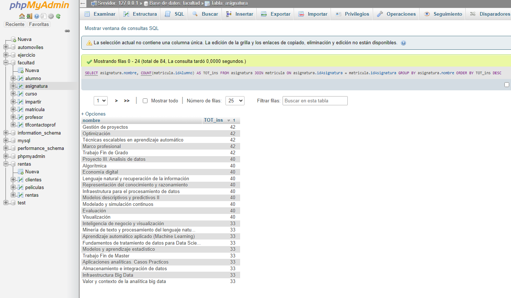

SELECT * FROM `alumno` WHERE 1
Consulta 1. Obtener el listado de todos los alumnos de la facultad

SELECT curso.nombreDescriptivo, asignatura.nombre FROM curso INNER JOIN asignatura ON curso.idCurso = asignatura.curso
Consulta 2. Obtener listado de cursos(nombre) y las asignaturas que tiene.
SELECT alumno.nombre, alumno.apellido1, alumno.apellido2 FROM alumno WHERE beca LIKE "si"
Consulta 3. Obtener el listado (nombre y apellidos) de alumnos que tengan beca.

SELECT profesor.nombre, profesor.apellido1, profesor.apellido2, tlfcontactoprof.telefono FROM profesor INNER JOIN tlfcontactoprof ON profesor.idProfesor = tlfcontactoprof.idProfesor
Consulta 4. Obtener el listado de PROFESORES(NOMBRE, APELLIDO) y su NUMERO de CONTACTO
SELECT alumno.nombre, alumno.apellido1, alumno.apellido2,asignatura.idAsignatura FROM alumno INNER JOIN matricula ON alumno.idAlumno = matricula.idAlumno INNER JOIN asignatura ON matricula.idAsignatura = asignatura.idAsignatura WHERE asignatura.idAsignatura LIKE "AS009"
Consulta 5. Obtener el listado de alumnos (TODOS LOS CAMPOS) que estan inscritos a la asignatura de programación AS009.
SELECT profesor.nombre, asignatura.nombre FROM profesor INNER JOIN impartir ON profesor.idProfesor=impartir.idProfesor INNER JOIN asignatura ON impartir.idAsignatura=asignatura.idAsignatura
Consulta 6. Obtener el listado de profesores y asignaturas que imparten.

SELECT asignatura.nombre, COUNT(matricula.idAlumno) AS TOT_ins FROM asignatura JOIN matricula ON asignatura.idAsignatura = matricula.idAsignatura GROUP BY asignatura.nombre ORDER BY TOT_ins DESC;
Consulta 7. Mostrar la asignatura que tiene mas alumnos inscritos y su tot al.
Consulta 8. Obtener el listado de ALUMNOS que les da clase el PROFESOR con ID PRO48 (JOSE MANUEL).
Consulta 9. Obtener el listado de cursos, con asignatura, y el maestro que las imparte.
Consulta 10. Obtener el listado de alumnos, con asignaturas que cursa, PROFESOR que la imparte y curso al que pertenece.